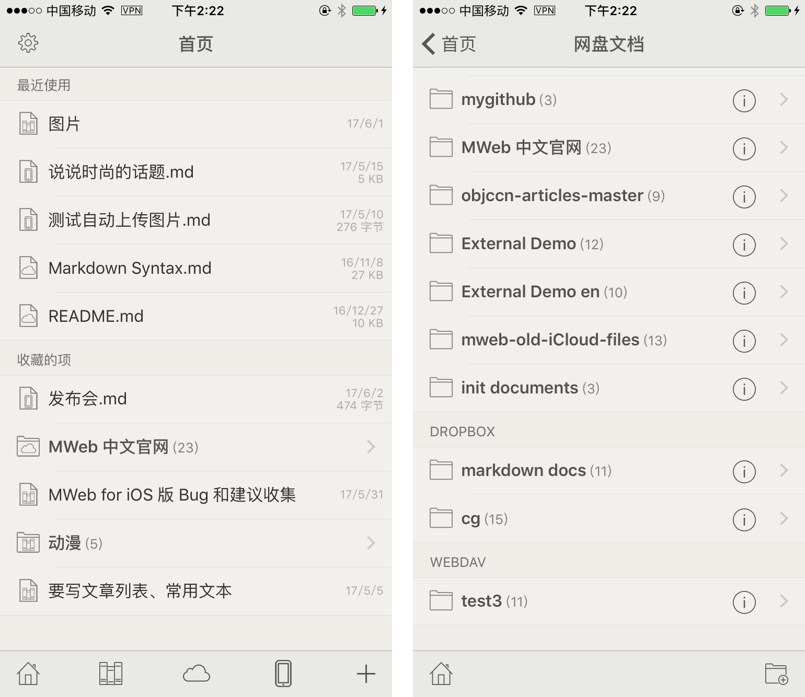
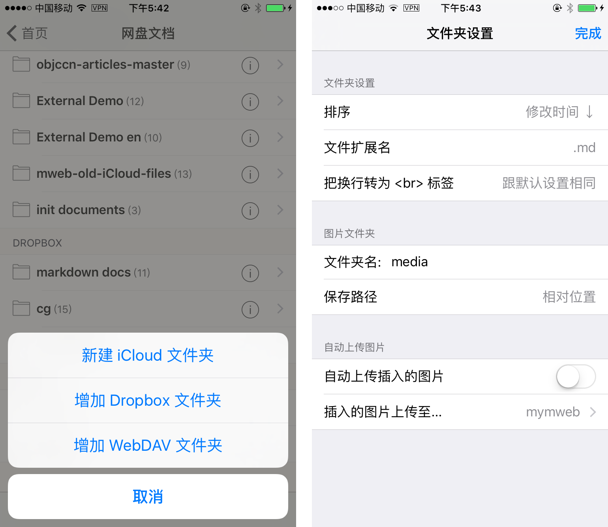
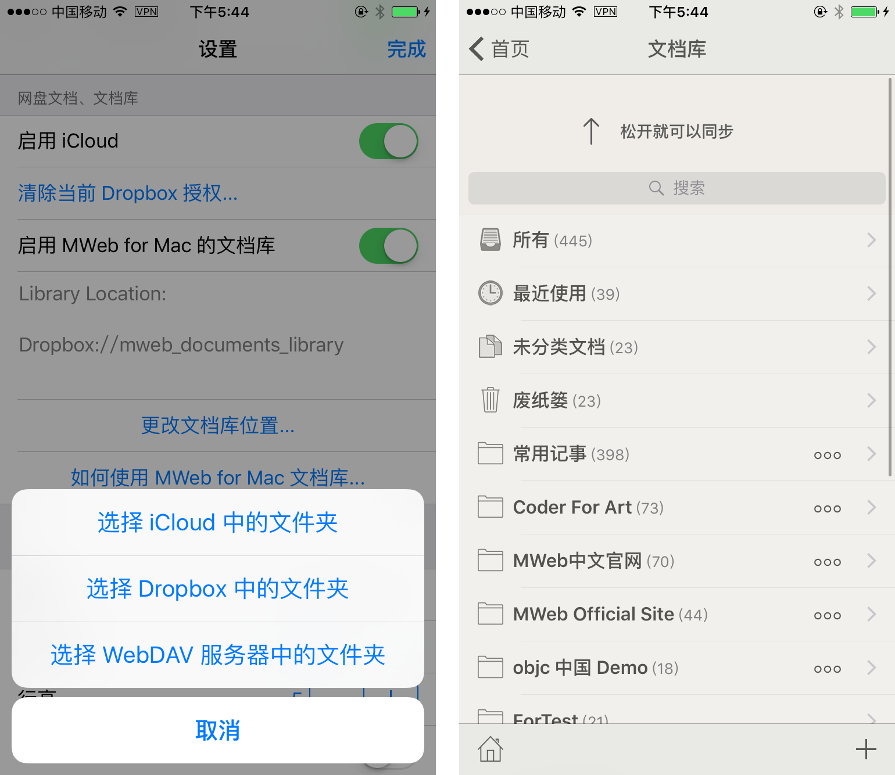

MWeb for iOS 2.3.x 版测试说明
2.3.x 版的目标是增加 Dropbox 和 WebDAV 同步，测试重点也是这两个，然后这个版本还未来得及修正 2.2.7 之前反馈的一些 bug 和改进，这些改进会在 2.3.x 测试时顺便修正，非常感谢反馈的朋友！
iOS 版 MWeb 2.3.x 版网盘文档使用说明
iOS 版 MWeb 在 2.2.x 版首页底部工具栏中有一个名为 “iCloud 文档” 的按钮，现在这个按钮改成了 “网盘文档”，也就是 iCloud Drive、Dropbox、WebDAV 同步的文档都在此。这个网盘文档等于是 Mac 版 MWeb 的外部模式，如下图所示。

如下图所示，在 “网盘文档” 中，可以增加 Dropbox、WebDAV 的文件夹以同步，相当于 Mac 版的引入文件夹。增加的文件夹都会有 (i) 的按钮，点击后会如出现右边的设置页面，相当于 Mac 版引入的文件夹的设置，可设置新建文档时默认扩展名、图片文件夹和插入图片时是否自动上传至图床。

以上就是网盘文档的简单说明，我使用下来，发现 Dropbox 是相当稳定可靠的，WebDAV 用的是免费版的坚果云，有时会出现超时，然后同步的话，一般是要 WebDAV 支持 etag 才好做，但是坚果云不支持，所以目前同步是用 “修改时间” 来判定，我测试下来的结果是基本可用，还要继续优化。
目前的测试版中，网盘文档还没有提供 “移动” 这个功能，不过正式版会有这功能。
重点说明是：目前是测试版本，建议先测试看看再决定是否用于正式文档，WebDAV 功能暂时不要用于正式文档！
文档库功能使用说明
之前的版本由于只支持 iCloud Drive，所以不支持自行设置文档库位置。2.3.x 版的文档库已支持自行设置文档库的位置。
使用文档库功能，首先要在 MWeb for Mac 的偏好设置 - 通用设置 - 文档库位置 中，用 “另存为” 按钮，把文档库另存到 iCloud Drive、Dropbox 或 WebDAV 的某个文件夹中。当文档库同步好之后，再回到 iOS 的设置页面，选择你之前另存到的网盘的文件夹。如下图，我在 Mac 中是把文档库保存到 Dropbox 下的 mweb_documents_library 文件夹中，所以我下图选择的是一样的位置。要注意的是，如果你选择另存到 iCloud Drive，必须另存到 iCloud Drive 下 MWeb 所属的文件夹内才可以，不然在 iOS 中会选取不到文档库。

设置完成后，回到首页，点文档库按钮，即可进入文档库，一开始时会自动同步，之后是的频率是 12 小时。当然，你也可以下拉，手动进行同步，如上图右边所示。要注意的是，如果使用的是 iCloud Drive，是不能进行手动同步的，因为 iCloud Drive 的同步是 iOS 系统决定的。
还要注意的是，目前 iOS 版文档库还是只有查看、增加文档和编辑现有文档功能，删除和归类等等都不支持。然后新增的文档只能在 “所有文档” 和 “未分类文档” 中找到。
重点说明：目前是测试版本，建议先测试看看再决定是否用于正式文档，WebDAV 功能暂时不要用于正式文档！ 所以建议的做法是：把文档库复制一份到 Dropbox 或 WebDAV 的文件夹中，在 Mac 版 MWeb 中用 偏好设置 - 通用设置 - 文档库位置 中的 “选择现有文档库” 按钮，选择这个位置。在 iOS 中也选择这个位置。这样的话，测试时就不会影响原来的文档库，如果不想测试，再用 “选择现有文档库” 按钮，选择回原来的文档库即可。
编辑文档时的同步说明
一开始我的想法是文档自动保存时就同步一下当前文档，这个做法使用 Dropbox 时是没有问题的，但是在用坚果的 WebDAV 时，频繁出现超时问题。奇怪的是同步全部文档时却不会出现这个问题。超时目前还会影响性能，原因我还在排查中。目前的做法是退出编辑文档，回到文件列表时才会同步一下当前文档，这样就不会因为超时的性能问题而影响文档编辑。要注意的是，同步当前文档时如果出现超时错误，目前不会提示，因为随时可以用下拉同步来手动同步所有文档。
PS：如果想申请 TF 测试，可以按 姓,名,邮箱 的格式发到 coderforart[at]gmail。比如： 王,小明,xiaoming@gmail.com 。直接只标题发这个即可，我就知道是申请 TF 测试的了。